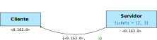
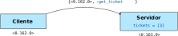
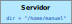
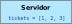
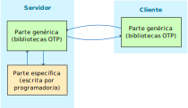
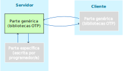
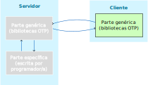
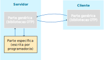
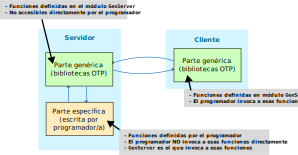

defmodule AreaServer do
def loop() do
receive do
{from, {:rectangle, width, height}} ->
send(from, {self(), width * height})
loop()
{from, {:circle, radius}} ->
send(from, {self(), :math.pi() * radius * radius})
loop()
{from, other} ->
send(from, {self(), {:error, other}})
loop()
end
end
def start(), do: spawn_link(AreaServer, :loop, [])
end> p = AreaServer.start()
#PID<0.163.0>
> send(p, {self(), {:circle, 4}})
{#PID<0.162.0>, {:circle, 4}}
> flush()
{#PID<0.163.0>, 50.26548245743669}def area_rectangle(pid_server, width, height) do
send(pid_server, {self(), {:rectangle, width, height}})
receive do
{^pid_server, response} -> response
end
end
def area_circle(pid_server, radius) do
send(pid_server, {self(), {:circle, radius}})
receive do
{^pid_server, response} -> response
end
end> p = AreaServer.start()
> AreaServer.area_rectangle(p, 10, 2)
20Introducimos una función call/2
para evitar repetición de código.
De este modo, la implementación de
area_rectangle/3 y area_circle/2 queda del
siguiente modo:
def loop(dir) do
receive do
{from, :list_dir} ->
send(from, {self(), File.ls(dir)})
loop(dir)
{from, {:get_file, file}} ->
path = Path.join(dir, file)
send(from, {self(), File.read(path)})
loop(dir)
{_from, {:change_dir, new_dir}} ->
loop(new_dir)
end
end
def start(dir), do: spawn_link(FileServer, :loop, [dir])def list_dir(pid_server) do
call(pid_server, :list_dir)
end
def get_file(pid_server, file) do
call(pid_server, {:get_file, file})
end
def change_dir(pid_server, new_dir) do
call(pid_server, {:change_dir, new_dir}) ⚠️ ¡Cuidado!
end> p = DirServer.start("/home/manuel")
> DirServer.change_dir(p, "/tmp")
... shell esperando ...La función call realiza una petición al servidor, y
queda a la espera de una respuesta por parte de éste.
Sin embargo, cuando el servidor recibe un mensaje de la forma
{:change_dir, dir}, no devuelve ninguna respuesta.
A consecuencia de esto, la función change_dir (que a
su vez llama a call) queda a la espera de una respuesta que
nunca llegará.
Podemos crear una función análoga a call que no
espere una respuesta del servidor:
Cambiamos la implementación de change_dir del
siguiente modo:
> p = FileServer.start("/home/manuel")
#PID<0.183.0>
> FileServer.list_dir(p)
{:ok, ["Fich1.txt", ...]}
> FileServer.change_dir(p, "/tmp")
> FileServer.list_dir(p)
{:ok, ["tmp1.txt", "tmp2.txt", ...]call vs castcall son
síncronas:
cast son
asíncronas:
receive, si este responde.Como tercer y último ejemplo, implementaremos un servidor que guarde una lista de números y los vaya distribuyendo a sus clientes a medida que estos los pidan.
La función loop encargada de manejar el servidor
mantiene una lista de números (tickets).
Cuando esta función recibe una petición get_ticket
de un cliente, el servidor responde con el primer elemento de esta
lista, y vuelve a esperar al siguiente mensaje, esta vez utilizando los
tickets restantes.


def loop(tickets) do
receive do
{from, :get_ticket} ->
case tickets do
[] ->
send(from, {self(), :error}) El servidor termina tras responder
[t] ->
send(from, {self(), t}) El servidor termina tras responder
[t|ts] ->
send(from, {self(), t})
loop(ts) El servidor continúa su ejecución
end
end
end
def start(num_tickets) do
spawn_link(TicketServer, :loop, [Enum.into(1..num_tickets, [])])
end> p = TicketServer.start(4)
#PID<0.146.0>
> TicketServer.get_ticket(p)
1
> TicketServer.get_ticket(p)
2
> TicketServer.get_ticket(p)
3
> TicketServer.get_ticket(p)
4
> Process.alive?(p)
false El proceso muere tras emitir el último ticket Comparemos las implementaciones de los tres servidores:
AreaServerFileServerTicketServer🤔 ¿Qué tienen en común?
🤔 ¿En qué difieren?
Las tres implementaciones disponen de una función
loop recursiva que procesa los mensajes recibidos.
Las funciones loop pueden recibir un parámetro que
contiene la información de estado del servidor.
Servidor de ficheros
Directorio actual

Servidor de tickets
Lista de tickets restantes

Servidor de áreas
No hay estado
Podemos utilizar una constante como
estado (por ejemplo, :ok)
handle_call, que recibe tres parámetros:
request)from)state)response)new_state)La función handle_call devolverá una tupla de la
forma {:reply, response, new_state}.
El bucle de recepción de mensajes queda del siguiente modo:
handle_callhandle_calldef handle_call(:list_dir, _from, dir) do
{:reply, File.ls(dir), dir}
end
def handle_call({:get_file, file}, _from, dir) do
path = Path.join(dir, file)
{:reply, File.read(path), dir}
end
def handle_call({:change_dir, new_dir}, _from, _dir) do
{:reply, :ok, new_dir} Devolvemos `:ok` y cambiamos estado
endhandle_calldef handle_call(:get_ticket, _from, []) do
{:reply, :error, []}
end
def handle_call(:get_ticket, _from, [t]) do
{:reply, t, []}
end
def handle_call(:get_ticket, _from, [t | ts]) do
{:reply, t, ts}
endEn el servidor de tickets original, el servidor se detenía tras expedir el último ticket.
En la versión transformada, esto ya no es así.
Para poder determinar cuándo parar el servidor, distinguiremos
entre dos tipos de respuestas en handle_call:
{:reply, response, new_state}
El servidor devolverà response al cliente, y el nuevo
estado será new_state.
{:stop, response}
El servidor devolverá response al cliente y
finalizará.
La función loop que gestiona los mensajes queda del
siguiente modo:
Modificamos la función handle_call del servidor de
tickets:
La implementación genérica de loop que hemos
desarrollado solamente permite llamadas síncronas.
:ok).Esto ocurría en el servidor de ficheros, donde la petición
{:change_dir, new_dir} no exige una respuesta del
servidor.
Podemos separar el código de tratamiento de mensajes en dos funciones:
handle_call: Llamadas síncronas, que esperan
respuesta.handle_cast: Llamadas asíncronas, que no esperan
respuesta.handle_cast recibe dos parámetros:
request)state){:noreply, new_state}
El servidor continuará su ejecución con new_state como
nueva información de estado.
:stop
El servidor se detendrá.
El servidor de ficheros queda del siguiente modo:
handle_call para llamadas síncronas
handle_cast para llamadas asíncronas
Actualizamos la función loop genérica para tratar
los mensajes recibidos por el servidor. Distinguiremos dos tipos de
mensajes:
{from, :call, request}: llamadas síncronas{from, :cast, request}: llamadas asíncronasNingún cambio con respecto a la versión anterior, salvo la componente
:call en la tupla del mensaje.
call/2 y
cast/2:call y :cast en las tuplas del mensaje, según
el caso.Hemos identificado los componentes genéricos comunes a las implementaciones de un servidor.
loop genéricacall y cast genéricasHemos identificado los componentes específicos de cada ejemplo:
handle_callhandle_castcall y cast)handle_call y handle_cast utilizan
exclusivamente Elixir secuencial. El paso de mensajes queda encapsulado
en las funciones call, cast y
loop.
Nuestra implementación genérica de servidores puede extenderse aún más:
Tratamiento de excepciones
Recepción de señales :EXIT procedentes de enlaces
vitales
Inicialización, finalización y liberación de recursos
Hot-code swapping
😎 Pero las bibliotecas de Elixir ya se encargan de esto, como veremos a continuación.
OTP es una colección de bibliotecas y herramientas escritas en Erlang, las cuales han sido «heredadas» por Elixir.
En estas bibliotecas podemos encontrar implementaciones de patrones de diseño comunes a una gran cantidad de sistemas concurrentes.
A la formalización de cada uno de estos patrones se le denomina comportamiento (behaviour). Los comportamientos están definidos en las bibliotecas OTP.
GenServerAbstrae las partes comunes en una arquitectura cliente/servidor.
SupervisorImplementa árboles de supervisión, que permiten reiniciar procesos en caso de que fallen.
GenStage (como biblioteca externa a OTP)Permite expresar pipelines de eventos entre productores y consumidores.
Fuera de la plataforma OTP, la biblioteca estándar de Elixir proporciona otros módulos que implementan patrones habituales en programación concurrente:
AgentPermite encapsular un estado dentro de un proceso.
TaskPermite modelizar tareas que se ejecutan de manera asíncrona.
GenServerGenServer

El servidor ejecuta un bucle de recepción de mensajes mediante una función.

call y
cast del módulo GenServer. Estas funciones
envían los mensajes correspondientes al servidor.
El programador implementa unas funciones callback que serán ejecutadas por la parte genérica del servidor:
handle_call, handle_cast,
handle_info, etc.

Trataremos las siguientes funciones:
init/1handle_call/3 (opcional)handle_cast/2 (opcional)handle_info/2 (opcional)terminate/2 (opcional)init/1Debe realizar las operaciones de inicialización del servidor, y determinar su estado inicial.
El parámetro que reciba init/1 será el que se haya
especificado por el cliente al arrancar el servidor.
Ha de devolver alguno de los siguientes valores:
{:ok, state}
{:ok, state, timeout}
{:ok, state, :hibernate}
{:stop, reason}
:ignore ###
init/1{:ok, state}
El servidor se inicializa correctamente y su estado inicial será
state.
{:ok, state, timeout}
El servidor se inicializa correctamente y su estado inicial será
state.
Si, tras la inicialización, han pasado timeout
milisegundos sin que haya llegado ninguna petición al servidor, este se
enviará a sí mismo un mensaje :timeout que serán procesado
por la función callback handle_info.
{:ok, state, :hibernate}
El servidor se inicializa correctamente y su estado inicial será
state.
Tras la inicialización, el proceso servidor pasará a modo hibernación, en el cual ocupa menos memoria. El proceso «despertará» cuando reciba alguna petición de un cliente.
{:stop, reason}
El servidor no se inicializará. El motivo de ello
(reason) será comunicado al cliente.
:ignore
El servidor no se inicializará. El cliente no recibe ninguna información adicional.
Como en el servidor de áreas no se hace uso del estado, podemos
colocar cualquier otro valor en lugar de false.
handle_call/3request, from y
state.{:reply, reply, new_state}{:reply, reply, new_state, timeout}{:reply, reply, new_state, :hibernate}{:noreply, reply, new_state}{:noreply, reply, new_state, timeout}{:noreply, reply, new_state, :hibernate}{:stop, reason, reply, new_state}{:stop, reason, new_state}fromEn la implementación que hemos realizado anteriormente, el
parámetro from contenía el PID del cliente que realiza la
llamada.
En el caso de GenServer, este parámetro contiene un
par {pid, ref}, donde pid es el PID del
cliente y ref es un término que identifica únivocamente a
esa llamada.
El resto de parámetros (request y
state) tienen el mismo significado que en la implementación
refactorizada que hemos realizado anteriormente.
handle_call{:reply, reply, new_state}
{:reply, reply, new_state, timeout}
{:reply, reply, new_state, :hibernate}
Se devolverá la respuesta reply al cliente, y el estado
del servidor pasará a ser new_state.
{:no_reply, new_state}
{:no_reply, new_state, timeout}
{:no_reply, new_state, :hibernate}
La función handle_call no devolverá una respuesta al
cliente, porque delegará esa respuesta en otro proceso. El proceso
delegado deberá responder mediante GenServer.reply/2.
El estado del proceso pasa a ser new_state.
{:stop, reason, reply, new_state}
El servidor devolverá la respuesta reply al cliente, y a
partir de ese momento dejará de atender peticiones.
El estado del servidor pasará a ser new_state, que puede
ser de utilidad para la función callback
terminate/2, que se encarga de las (posibles) tareas de
limpieza.
El motivo de la parada del servidor se especifica en la componente
reason.
{:stop, reason, new_state}
Igual que el anterior, pero se delega la respuesta al cliente en otro
proceso, que deberá responder mediante
GenServer.reply/2.
def handle_call({:rectangle, width, height}, _from, state) do
{:reply, width * height, state}
end
def handle_call({:circle, radius}, _from, state) do
{:reply, :math.pi * radius * radius, state}
end
def handle_call(other, _from, state), do: {:reply, {:error, other}, state}handle_cast/2Se encarga de procesar las peticiones asíncronas.
Recibe dos parámetros: request y
state
Ha de devolver alguna de las siguientes tuplas:
{:noreply, reply, new_state}{:noreply, reply, new_state, timeout}{:noreply, reply, new_state, :hibernate}{:stop, reason, new_state}Son iguales que las de handle_call, pero omitiendo la
componente reply, ya que el cliente no espera respuesta de
una petición asíncrona.
No se define
No se define
handle_info/2Se encarga de procesar todos aquellos mensajes recibidos por el
servidor que no han sido generados mediante las funciones
GenServer.call y GenServer.cast. Esto
incluye:
send.:timeout que el servidor se envía a sí
mismo.:DOWN provenientes de procesos
monitorizados.:EXIT provenientes de un proceso
enlazado cuando muere.Los parámetros y resultados de handle_info tienen la
misma semántica que los de handle_cast.
En nuestros tres ejemplos (servidor de áreas, ficheros y tickets) nos limitaremos a imprimir por pantalla el mensaje recibido y mantendremos el mismo estado:
terminate/2Es invocada cuando alguna de las funciones
handle_call, handle_cast o
handle_info devuelve una tupla
{:stop, ...}.
También es invocada si el proceso que inició el servidor mediante
start_link muere.
Process.flag.Recibe dos parámetros: reason y
state.
El valor de retorno es ignorado.
En nuestros ejemplos (servidor de áreas, ficheros y tickets) nos limitaremos a imprimir por pantalla un mensaje.
GenServerGenServer.start, GenServer.start_linkGenServer.call, GenServer.castGenServer.stopstart y start_linkArrancan un servidor implementado mediante
GenServer.
GenServer.start(Modulo, Arg, Options)
Modulo: Nombre del módulo que implementa las
funciones callback del servidor.
Arg: Término pasado como argumento a la función
callback init/1.
Options: Keyword list de opciones
adicionales
Devuelve un par {:ok, pid} con el PID del servidor
creado.
La función start:
Llama a la función init del Modulo
indicado, pasando Arg como parámetro.
Lanza (mediante spawn) el servidor, pasándole el
estado inicial devuelto por init.
Devuelve el PID del proceso iniciado.
Existe una variante (start_link) que se comporta
igual que start, pero crea un enlace vital entre el
servidor y el proceso que lo inicia.
start y
start_linkname: N
Registra el servidor con el nombre N
timeout: T
Si tras T milisegundos no se ha inicializado el
servidor, se devuelve {:error, :timeout}.
hibernate: T
Transcurridos T milisegundos tras la inicialización, si
no se ha recibido ningún mensaje, el servidor pasa a estado de
hibernación.
callRealiza peticiones síncronas al servidor:
GenServer.call(server, request, timeout \\ 5000)
server: PID o nombre del proceso servidorrequest: petición a enviartimeout: tiempo máximo de espera (en ms) para recibir
una respuesta (puede ser :infinity). Si no se recibe en ese
tiempo, call lanza una excepción.Cuando se hace uso de call:
La función call envía el mensaje
request al servidor indicado.
El servidor llama a la función handle_call pasando
la request correspondiente.
La función handle_call devuelve una respuesta y el
estado actualizado.
El servidor envía la respuesta de handle_call al
proceso que ha llamado a call y actualiza su
estado.
La función call recibe el mensaje enviado por el
servidor, y devuelve la respuesta contenida en dicho mensaje.
castRealiza peticiones asíncronas al servidor:
GenServer.cast(server, request)
server: PID o nombre del proceso servidorrequest: petición a enviarLa función cast devuelve :ok tras
enviar la petición al servidor.
Cuando se hace uso de cast:
La función cast envía el mensaje
request al servidor indicado y devuelve :ok al
llamante.
El servidor llama a la función handle_cast pasando
la request correspondiente.
La función handle_cast devuelve el estado
actualizado.
El servidor actualiza su estado.
stopFinaliza un GenServer
GenServer.stop(server, reason, timeout)
La parada se realiza de manera síncrona. Es decir, el proceso que
llama a stop espera a que el servidor finalice.
El servidor llamará a la función callback
terminate antes de finalizar.
Cualquier valor de reason distinto de
:normal o :shutdown se considera muerte por
causa anormal, y generará un mensaje de error.
defmodule AreaServer do
use GenServer
########################################
# Funciones callback de GenServer
########################################
@impl true
def init(_) do
{:ok, []}
end
@impl true
def handle_call({:rectangle, width, height}, _from, state) do
{:reply, width * height, state}
end
def handle_call({:circle, radius}, _from, state), do: ...
def handle_call(other, _from, state), do: ...
@impl true
def handle_info(msg, state), do: ...
@impl true
def terminate(_reason, _state), do: ...
### ... continúa ... # ...continuación...
########################################
# Funciones de interfaz
########################################
def start(), do: GenServer.start(AreaServer, false)
def area_rectangle(pid_server, width, height) do
GenServer.call(pid_server, {:rectangle, width, height})
end
def area_circle(pid_server, radius) do
GenServer.call(pid_server, {:circle, radius})
end
enduse GenServer?Indica que el módulo AreaServer implementa funciones
callback de GenServer.
La directiva use GenServer inyecta definiciones por
defecto para las funciones callback que no hayamos definido
nosotros.
@impl true?Indica que la función que se define a continuación es una función
callback correspondiente a GenServer.
Resulta útil para detectar errores si nos equivocamos en el
nombre de la función callback. Por ejemplo:
Como la función hanlde_cast no es ninguna función
callback de GenServer, se muestra un mensaje de
aviso.